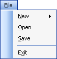

Add Shorcuts to your Menu Items
This tutorial assumes that you have completed the first one.
In the previous tutorial, you learned how to add Sub Menus to your VB .NET forms. In this part, you'll see how to add shortcuts to your menu items
Underline Shortcut
To add an underline, do this:
- Click on your New menu item once. This will select it
- Position your cursor before the "N" of New
- Type an ampersand symbol (&)
- Hit the return key on your keyboard
- You should see this:
Notice that "N" of New is now underlined. If you want an underline shortcut, the ampersand character should be typed before the letter you want underlined.
Add underlines for the "F" of you File menu, the "O" of Open, the "S" of Save, and the "X" of Exit. When you're done, your menu should look like this one:

Time to see if your shortcut works. Run your programme. To use the underline shortcuts on menus, you first hold down the Alt key on your keyboard. Then type the underline character.
- Hold down the Alt key while your programme is running (You might not be able to see the underlines until you press the Alt key.)
- Press the letter "F" on your keyboard
- Then press the letter "X" (for the Exit menu)
- Your programme should close down
All that and you didn't have to write a single line of code!
No more reading these lessons online - get the eBook here!
Key combination shortcuts
A key combination shortcut is one that appears at the end of a menu item (Ctrl + X, for example). You can easily add this option to your own programmes. So try this:
- In Design time, select the Exit item on your menu
- Look at the properties box on the right
- Locate the ShortcutKeys item:
- Click the down arrow to reveal the following:
The Modifier is the key you press with your shortcut. For example, the CTRL key then the "X" key on your keyboard. Place a check inside the Ctrl box. Then select the letter "X" from the Key dropdown list, as in the next image:
Click back on your menu to see what it looks like:
Run your programme and test out the shortcut. Don't click the File menu. Just hold down the Ctrl key on your keyboard. Then press the letter X. Again, the programme will close down.
You can add these types of shortcuts to any menu item. Just remember to choose a different key stroke combination for each one. And don't have too many of them - they'll spoil the look of your menu!
Now that you know how to add Menus, Sub Menus and Shortcuts it's time for you to complete your own menu bar. Click the project below to see what you need to do. It's not very difficult! In the section after the project, you'll see how to add code for your new menu bar.